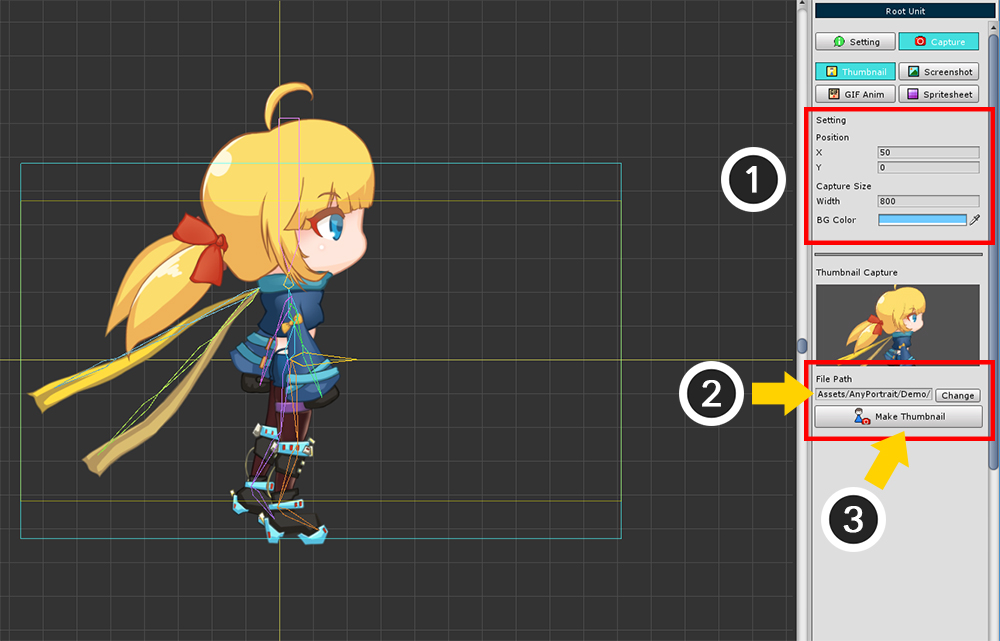
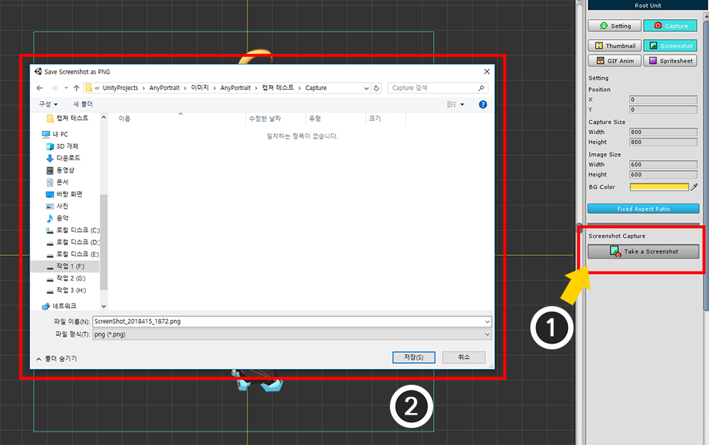
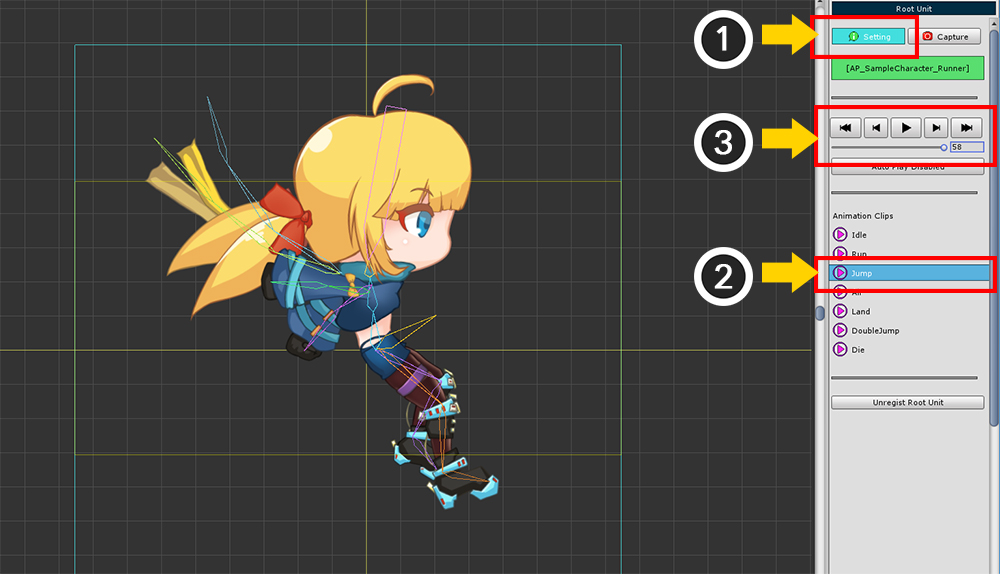
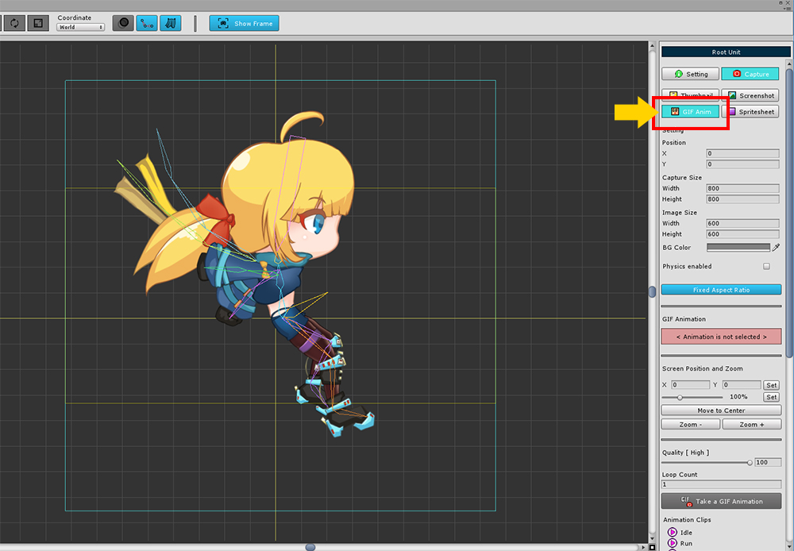
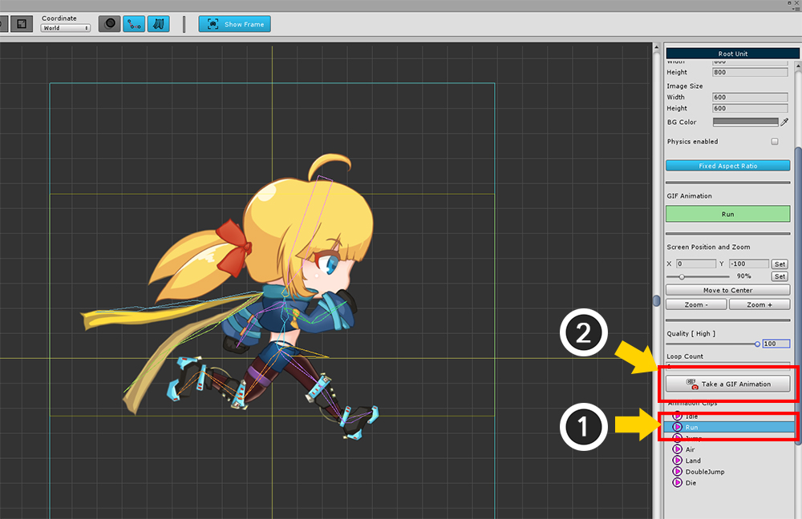
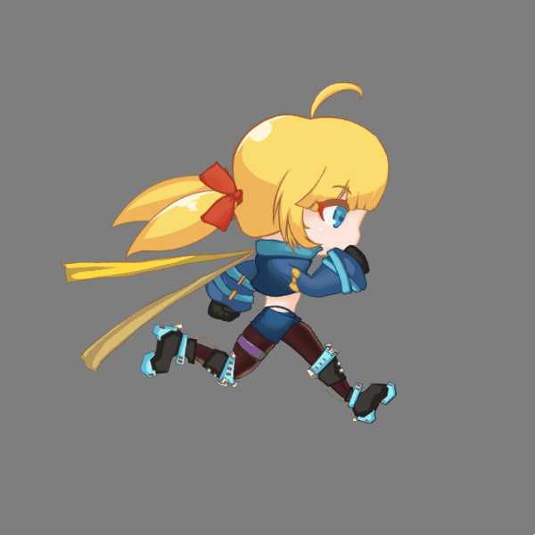
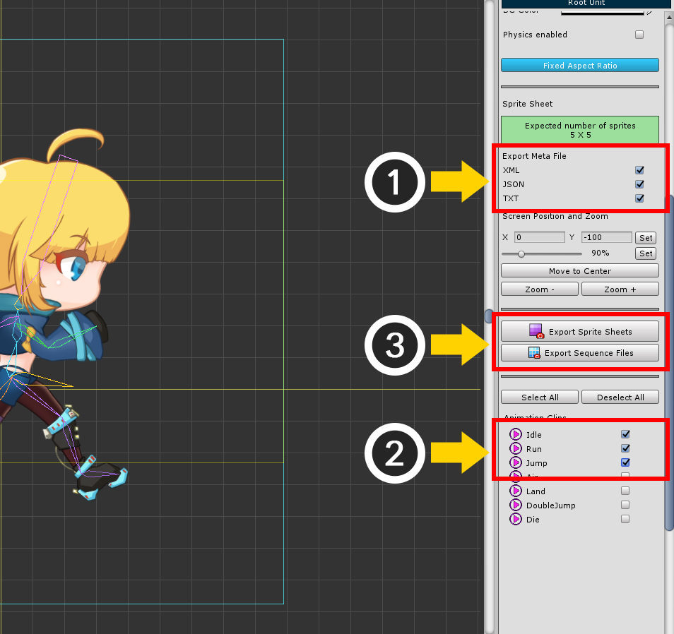
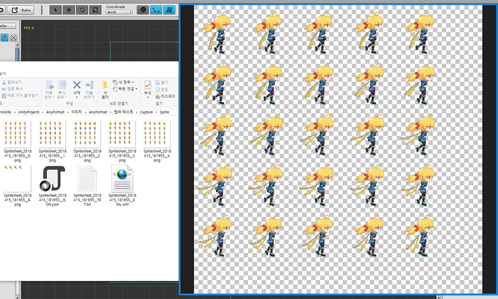

AnyPortrait > マニュアル > 画面キャプチャ
画面キャプチャ
1.5.1
AnyPortraitを使用すると、画面を直接キャプチャすることができます。
これはプロのキャプチャツールではないため、共有目的として使用することをお勧めします。
スクリーンキャプチャはバージョン1.0.3から改善されており、この機能はMac OSXでもサポートされています。
このページの変更を見ることができます。

画面キャプチャ機能を使用するには
(1) 「ルートユニット」を選択します。
(2) 「Show Frame」ボタンを押すと、画面がキャプチャされた領域が表示されます。 （これはデフォルトでオンになっています）。

右側の画面で、(1) 「Capture」タブを選択します。
4つのスクリーンキャプチャツールが利用できます。
Thumbnail : AnyPortraitエディターの最初の画面で使用したサムネイルをキャプチャーします。
Screenshot : スクリーンショットイメージをファイルとして保存します。
GIF Anim : アニメーションを選択し、GIFアニメーションファイルとして保存します。
Spritesheet : アニメーションを選択し、スプライトシートまたはシーケンスイメージとして保存します。
サムネイルを作成

これは、サムネイルを作成できる画面です。
1. キャプチャ領域 : 画像として保存する領域。 黄色の四角形がサムネイルとして格納される領域。
2. 4つのキャプチャツール : スクリーンキャプチャ用の4つのツール。 この場合、「サムネイル(Thumbnail)」を選択します。
3. キャプチャ領域の位置 : キャプチャ領域を移動できます。 デフォルトは（0、0）です。
4. キャプチャ領域の幅と背景色 : キャプチャ領域の幅と背景色を設定できます。 幅を設定すると、高さが自動的に割り当てられます。
5. サムネイルプレビュー : サムネイルを表示できます。
6. 保存パス : サムネイルが保存されるパスを指定します。 ファイルは、Assetsフォルダの下に配置する必要があります。
7. Make Thumbnail : このボタンは、サムネイルを作成するために使用します。

(1) キャプチャ領域の位置、サイズ、および背景色を設定します。
(2) 「Change」ボタンを押すとサムネイル画像を保存するファイルパスが設定されます。 ファイルは、Assetsフォルダに配置する必要があります。
(3) 「Make Thumbnail」ボタンをクリックしてサムネイルを作成します。

サムネイルが保存されるとすぐに確認できます。

エディタを起動して、キャラクターを選択すると、保存されたサムネイルが表示されます。
サムネイルは、キャラクターがたくさんあるときに便利です。
スクリーンショットを保存

この機能は、現在の画面を画像ファイルとして保存します。
画面構成は、サムネイルツールに似ています。
キャプチャ領域は、画面上の明るい青色の四角です。
(1) 「Screenshot」ツールを選択します。
(2) キャプチャ領域の位置とサイズを設定します。
(3) 保存する画像のサイズと背景色を選択します。
(4) 「Fixed Aspect Ratio」を有効にすると、幅と高さの比は一定のままで、撮影領域と画像サイズの比は同じになります。
キャプチャ領域はエディタのワークスペースより小さくなければなりません。
「Position, Capture Size」の値を調整して、「キャプチャ領域の四角形」がワークスペースに完全に表示されるように適切に設定してください。
保存される画像のサイズである「Image Size」は、キャプチャ領域のサイズとは無関係に設定できます。

(1) 「Take a Screenshot」ボタンを押して画像を保存します。
(2) 保存場所がAssetsフォルダの外にある可能性があります。

画像が保存されると、自動的に保存されたフォルダと画像が開きます。
スクリーンショットを保存 - キャプチャするアニメーションを選択する

別のアニメーションを選択したら、保存するフレームを指定して画面をキャプチャしましょう。
(1) 「Setting」タブに移動します。
(2) アニメーションを選択します。
(3) スライダーを使って、保存したいフレームに移動します。

(4) 再度「Capture」タブを選択します。
(5) 「Take a Screenshot」ボタンを押して画像を保存します。

上記のようにアニメーションポーズをキャプチャして保存することができます。
GIFアニメーションを保存

これは、再生できるGIFファイル形式でアニメーションを保存する方法です。
「GIF Anim (GIF Animation)」ツールを選択すると、上記のようなさまざまな設定が表示されます。
1. キャプチャ領域の位置
2. キャプチャ領域のサイズ
3. 画像のサイズと背景色
4. 物理的効果を適用するかどうか
: デフォルトでは、画面をキャプチャするときに「Physics」モディファイアはオフになっています。 この機能がチェックされると、 「Physics」モディファイアが適用された状態で画面がキャプチャされます。
5. Fixed Aspect Ratio (固定アスペクト比)
6. 選択したアニメーション名
: GIFファイルとして保存するアニメーションの名前が表示されます。
7. 画面のフォーカス位置とズーム比を設定
: キャプチャ領域とは別に画面のフォーカスを指定できます。 マウスホイールをドラッグするか、ホイールをスクロールするのではなく、この設定から直接制御できます。 値を入力し、「Set」ボタンを押します。
8. 「Move to Center」ボタン,「 Zoom」ボタン
: フォーカスを画面中央に移動したり、ズームイン/ズームアウトしたりすることができます。
9. GIF Quality, Loop Count
: GIF画像の圧縮品質を0〜100の間で指定できます。品質が高いほど記憶容量が大きくなり、保存時間が長くなります。
GIFアニメーションをキャプチャする際の繰り返し回数をキャプチャします。最小値は1です。(GIFファイル自身の設定の値は "無限の繰り返し"です。)
10. 「Take a GIF Animation」ボタン
: GIFアニメーションを保存します。
11. Animation Clips
: 保存したいアニメーションクリップを選択することができます。


既存の設定を保持したGIFアニメーションを作成しましょう。
(1) アニメーションを選択します
(2) 「GIFアニメーションを撮る」ボタンを押します。

アニメーションは、GIFアニメーションをキャプチャするために同時に実行されています。
アニメーションがキャプチャされている間、進行状況を確認することができます。
注意
処理中には、AnyPortraitエディタの位置や大きさを変えるならず、他のメニューや他の機能を選択してもいけません。
他の外部プログラムを実行しても構いません。

完成したGIFアニメーションファイルを見ることができます。
スプライトシートを保存

アニメーションの各フレームは画像になり、画像の組み合わせは「スプライトシート(Sprite Sheet)」と呼ばれます。
スプライトシートはUnityや他の2Dゲームエンジンでよく使われるアセットです。
AnyPortrait v1.0.3でスプライトシートの作成機能が追加されました。
「Sprite Sheet」ツールを選択すると、多くの設定が表示されます。
1. フレームあたりの画像サイズ
: スプライトの各フレームのイメージサイズ。
2. スプライトシートのサイズ
: スプライトシートイメージ全体のサイズ。 2の指数サイズで指定できます。
3. Method of Compressing size (圧縮方法)
: スプライトフレームサイズ圧縮方式。 既定の固定値は、上記で指定したフレームサイズを使用します。 圧縮されたメソッドは、画像を分析して、少し大きく切り取った画像をフレームサイズに設定します。 圧縮された画像サイズは、同じアニメーションのフレーム間で共通に適用される。
4. Margin, BG Color, Physics Enabled
: 各フレーム間のスペース(Pixel)。 GIFアニメーションを保存するだけでなく、背景色と物理効果を設定することができます。
5. 予想されるスプライト情報
: スプライトのイメージサイズを解析して、1つのスプライトシートに含めるフレームの数を確認します。 「Compressed」メソッドで保存すると、予想よりも多くのフレームが含まれている可能性があります。
6. Export Meta File (メタファイルのエクスポート)
: スプライトシートからの情報を含むメタファイルを保存するかどうかを決定できます。 ファイル形式は「XML、JSON、TXT」です。 複数選択できます。
7. 画面のフォーカスとズーム
8. Export Sprite Sheets
: スプライトシートとして保存するボタンです。
9. Export Sequence Files
: スプライトシートにマージすることなく、フレーム画像を別々の画像ファイルとして保存します。 メタファイルは同じ方法で保存されますが、内容は少し異なります。
10. Animation Clips
: 保存したいアニメーションクリップを選択することができます。 複数のアニメーションを選択できます。

1.5.1
スプライトシートのエクスポート時に同様の名前のアニメーションを選択しやすくするための検索機能が追加されました。
(1) 検索ボックスに文字を入力します。
(2) 検索されたアニメーションクリップのみが表示されます。
このとき、「Select All」ボタンを押すと、検索されたすべてのアニメーションを選択できます。
すべてのアニメーションを見たい場合は、検索ボックスのすべての文字を消去して「Enter」キーを押します。

スプライトシートを作成する方法です。
(1) フレームサイズを設定します。
(2) スプライトシートのサイズを設定します。 開発環境で許容される最大のサイズをお勧めします。
(3) 圧縮方法を決定する。 小容量の場合は圧縮が推奨されますが、メタファイルをチェックする必要があります。
(4) 余白と背景色を設定します。 開発環境に合わせて背景色を決定することをお勧めします。 私はここに透明色を設定しました。

前述のように、これはスプライトシートをエクスポートする方法です。
(1) 保存するメタファイルを選択します。 開発環境に合わせて選択してください。
(2) 保存するアニメーションを選択します。
(3) 「Export」ボタンを押します。 必要なファイルの種類に応じて、スプライトシートまたはシーケンスファイルのいずれかを選択します。

これらは完成したスプライトシートです。
画像とフォルダが自動的に開きます。
各フレームは複数の画像ファイルに保存されています。
メタファイルを開くと、保存されたアニメーションの情報、フレームサイズと位置情報が表示されます。
XML、JSONは実際の使用のために書かれており、TXTフォーマットは分かりやすい方法で書かれていました。
スプライトシートを保存 - シーケンスイメージとして保存
上記の手順で 「Export Sequence Files」ボタンを押すと、フレームは個別の画像として保存されます。

すべてのフレームが個別の画像として保存されていることがわかります。
フレームサイズとメタファイルは、スプライトシートと同じ方法で作成されます。
スプライトシートを保存 - 圧縮方法の比較
サイズスプライトシートの結果は、圧縮方法によって異なります。
違いは次のとおりです。
左は「Fixed」、右は「Compressed」です。
「Fixed」メソッドは、スプライトシートを設定されたフレームサイズに設定します。
「Compressed」アプローチでは、フレームサイズに基づいて画像が解析され、マージンを最小限に抑えるためにトリミングによってスプライトシートが作成されます。
画像によっては、最適なスプライトシートにさらに多くのフレームを含めることができます。
フレームのサイズは、メタファイルに格納されます。
圧縮されたフォーマットであっても、同じアニメーションのフレームは同じサイズであるため、すべてのマージンが完全に消えるわけではありません
スプライトシートを保存 - メタファイルの構造
1. XML
1) スプライトシート
<?xml version="1.0" encoding="utf-8" standalone="yes"?>
<Content>
<AnimationClip>
<Clip Index="0" Name="Idle" FPS="30" Frames="130" />
<Clip Index="1" Name="Run" FPS="40" Frames="24" />
<Clip Index="2" Name="Jump" FPS="60" Frames="59" />
</AnimationClip>
<FrameImage>
<Image AnimationClipIndex="0" Frame="0" SpriteIndex="0" X="4" Y="4" Width="200" Height="200" />
<Image AnimationClipIndex="0" Frame="1" SpriteIndex="0" X="208" Y="4" Width="200" Height="200" />
<Image AnimationClipIndex="0" Frame="2" SpriteIndex="0" X="412" Y="4" Width="200" Height="200" />
<Image AnimationClipIndex="0" Frame="3" SpriteIndex="0" X="616" Y="4" Width="200" Height="200" />
<Image AnimationClipIndex="0" Frame="4" SpriteIndex="0" X="820" Y="4" Width="200" Height="200" />
....
</FrameImage>
</Content>
<Content> : ルートノード
<AnimationClip> : アニメーションクリップ情報を含むグループノード
<Clip> : 各アニメーションクリップのノード
- Index : アニメーションクリップノードのインデックス
- Name : アニメーションクリップの名前
- FPS : アニメーションのFPS(フレーム/秒)
- Frames : アニメーション内のフレーム
<FrameImage> : フレーム画像を含むグループノード
<Image> : 各フレーム画像のノード
- AnimationClipIndex : フレームが表すアニメーションのインデックス。 クリップノードのインデックスを意味します。
- Frame : アニメーション内のフレーム(開始位置は0)
- SpriteIndex : 複数のスプライトシートファイルが作成された場合、保存されたイメージファイルのインデックス。(0から始まる)
- X, Y, Width, Height : フレームの位置とサイズ(Pixel)
2) シーケンスファイル
<?xml version="1.0" encoding="utf-8" standalone="yes"?>
<Content>
<AnimationClip>
<Clip Index="0" Name="Idle" FPS="30" Frames="130" />
<Clip Index="1" Name="Run" FPS="40" Frames="24" />
<Clip Index="2" Name="Jump" FPS="60" Frames="59" />
</AnimationClip>
<FrameImage>
<Image AnimationClipIndex="0" Frame="0" FileName="Sequence_2018415_182230_Idle__0.png" />
<Image AnimationClipIndex="0" Frame="1" FileName="Sequence_2018415_182230_Idle__1.png" />
<Image AnimationClipIndex="0" Frame="2" FileName="Sequence_2018415_182230_Idle__2.png" />
....
</FrameImage>
</Content>
<Content> : ルートノード
<AnimationClip> : アニメーションクリップ情報を含むグループノード
<Clip> : 各アニメーションクリップのノード
- Index : アニメーションクリップノードのインデックス
- Name : アニメーションクリップの名前
- FPS : アニメーションのFPS(フレーム/秒)
- Frames : アニメーション内のフレーム
<FrameImage> : フレーム画像を含むグループノード
<Image> : 各フレーム画像のノード
- AnimationClipIndex : フレームが表すアニメーションのインデックス。 クリップノードのインデックスを意味します。
- Frame : アニメーション内のフレーム(開始位置は0)
- FileName : フレーム画像のシーケンス画像ファイル名
2. JSON
1) スプライトシート
{
"AnimationClip":[
{ "Index":0, "Name":"Idle", "FPS":30, "Frames":130 },
{ "Index":1, "Name":"Run", "FPS":40, "Frames":24 },
{ "Index":2, "Name":"Jump", "FPS":60, "Frames":59 }
],
"FrameImage":[
{ "AnimationClipIndex":0, "Frame":0, "SpriteIndex":0, "X":4, "Y":4, "Width":200, "Height":200 },
{ "AnimationClipIndex":0, "Frame":1, "SpriteIndex":0, "X":208, "Y":4, "Width":200, "Height":200 },
{ "AnimationClipIndex":0, "Frame":2, "SpriteIndex":0, "X":412, "Y":4, "Width":200, "Height":200 },
....
]
}
AnimationClip : アニメーションクリップ情報を含むリスト
- Index : アニメーションクリップノードのインデックス
- Name : アニメーションクリップの名前
- FPS : アニメーションのFPS(フレーム/秒)
- Frames : アニメーション内のフレーム
FrameImage : フレーム画像情報を含むリスト
- AnimationClipIndex : フレームが表すアニメーションのインデックス。 クリップノードのインデックスを意味します。
- Frame : アニメーション内のフレーム(開始位置は0)
- SpriteIndex : 複数のスプライトシートファイルが作成された場合、保存されたイメージファイルのインデックス。(0から始まる)
- X, Y, Width, Height : フレームの位置とサイズ(Pixel)
2) シーケンスファイル
{
"AnimationClip":[
{ "Index":0, "Name":"Idle", "FPS":30, "Frames":130 },
{ "Index":1, "Name":"Run", "FPS":40, "Frames":24 },
{ "Index":2, "Name":"Jump", "FPS":60, "Frames":59 }
],
"FrameImage":[
{ "AnimationClipIndex":0, "Frame":0, "FileName":"Sequence_2018415_182230_Idle__0.png" },
{ "AnimationClipIndex":0, "Frame":1, "FileName":"Sequence_2018415_182230_Idle__1.png" },
{ "AnimationClipIndex":0, "Frame":2, "FileName":"Sequence_2018415_182230_Idle__2.png" },
....
]
}
AnimationClip : アニメーションクリップ情報を含むリスト
- Index : アニメーションクリップノードのインデックス
- Name : アニメーションクリップの名前
- FPS : アニメーションのFPS(フレーム/秒)
- Frames : アニメーション内のフレーム
FrameImage : フレーム画像情報を含むリスト
- AnimationClipIndex : フレームが表すアニメーションのインデックス。 クリップノードのインデックスを意味します。
- Frame : アニメーション内のフレーム(開始位置は0)
- FileName : フレーム画像のシーケンス画像ファイル名
3. TXT
1) スプライトシート
=========================================================================
AnyPortrait Sprite Sheet Data
=========================================================================
AnimationClip : 3
Index Name FPS Frames
0 Idle 30 130
1 Run 40 24
2 Jump 60 59
=========================================================================
FrameImage : 213
ClipIndex Frame SpriteIndex X Y Width Height
0 0 0 4 4 200 200
0 1 0 208 4 200 200
0 2 0 412 4 200 200
....
=========================================================================
AnimationClip : アニメーションクリップ情報の数
- Index : アニメーションクリップノードのインデックス
- Name : アニメーションクリップの名前
- FPS : アニメーションのFPS(フレーム/秒)
- Frames : アニメーション内のフレーム
FrameImage : フレーム画像情報の総数
- ClipIndex : フレームが表すアニメーションのインデックス。 クリップノードのインデックスを意味します。
- Frame : アニメーション内のフレーム(開始位置は0)
- SpriteIndex : 複数のスプライトシートファイルが作成された場合、保存されたイメージファイルのインデックス。(0から始まる)
- X, Y, Width, Height : フレームの位置とサイズ(ピクセル単位)
2) シーケンスファイル
=========================================================================
AnyPortrait Sprite Sheet Data
=========================================================================
AnimationClip : 3
Index Name FPS Frames
0 Idle 30 130
1 Run 40 24
2 Jump 60 59
=========================================================================
FrameImage : 213
ClipIndex Frame FileName
0 0 Sequence_2018415_182230_Idle__0.png
0 1 Sequence_2018415_182230_Idle__1.png
0 2 Sequence_2018415_182230_Idle__2.png
....
=========================================================================
AnimationClip : アニメーションクリップ情報の数
- Index : アニメーションクリップノードのインデックス
- Name : アニメーションクリップの名前
- FPS : アニメーションのFPS(フレーム/秒)
- Frames : アニメーション内のフレーム
FrameImage : フレーム画像情報の総数
- ClipIndex : フレームが表すアニメーションのインデックス。 クリップノードのインデックスを意味します。
- Frame : アニメーション内のフレーム(開始位置は0)
- FileName : フレーム画像のシーケンス画像ファイル名
MP4映像保存
アニメーションを選択してMP4ビデオファイルとして保存してエクスポートすることができます。
この機能は、「Unity 2017.4」またはそれ以降のバージョンで使用が可能です。
「Unity 2018.1」のバージョンからより改善された画質の映像として保存されます。

(1) Root Unitを選択した状態で、「Capture」タブを選択します。
(2) 「Animation」タブ（既存の「GIF Anim」タブ）を選択します。

(1) 画面をキャプチャする「領域の位置とサイズ」を定め、保存「映像のサイズ」を設定します。
作業画面から直接撮影するので、画面全体を撮影することはできません。
基本的な1080pの画面を基準に約「720p（1280x720）」までの撮影が可能です。
(2) GIFとは異なり、継続して映像が繰り返しなって再生されませんので、「Loop Count」に適切な値を入力します。
(3) 撮影しようとする「Animation Clip」を選択します。
(4) 「Export as MP4」ボタンをクリックします。

MP4ビデオファイルのパスと名前を設定して、「Save」ボタンを押します。

アニメーションが自動的に再生され映像が撮影されます。
このプロセスは非常にかかり、このプロセスには、他の作業をしないよう願います。
「Cancel」ボタンを押して撮影を中断することができます。
作業が完了すると、保存された画像ファイルが自動的に実行されます。
設定のエクスポート/インポート
1.5.1
「Export」ボタンと「Import」ボタンを押すと、キャプチャ設定をファイルにエクスポートまたはインポートできます。
一貫した画面キャプチャを繰り返し実行すると便利です。
すべてのキャプチャモードの設定は一度にファイルとして保存されます。